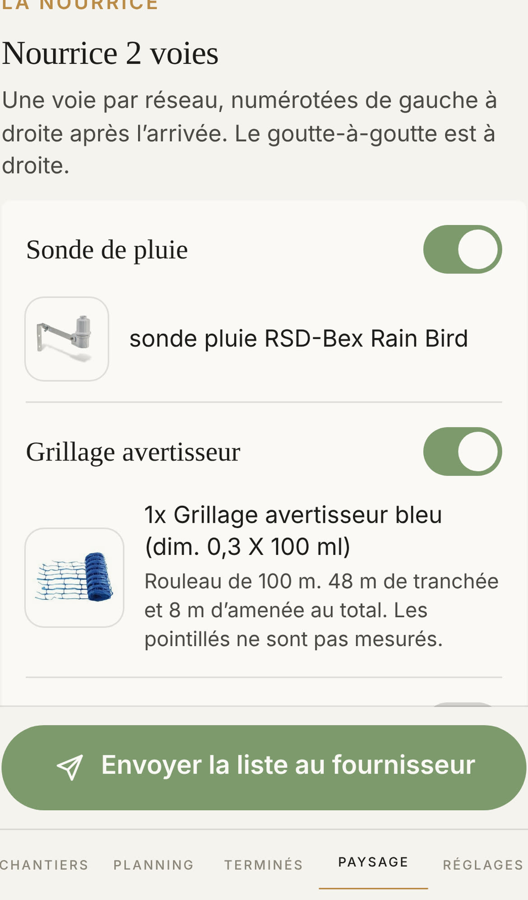
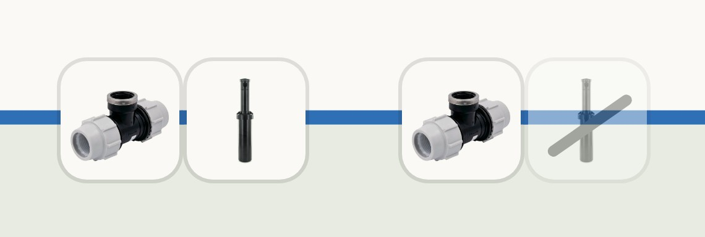
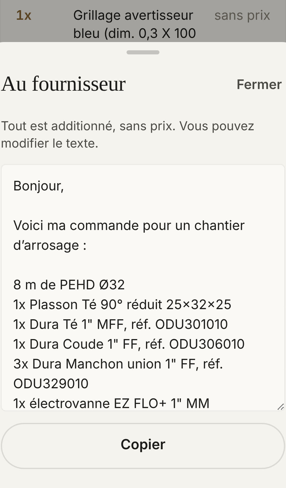
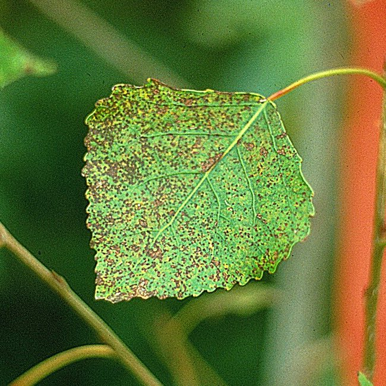
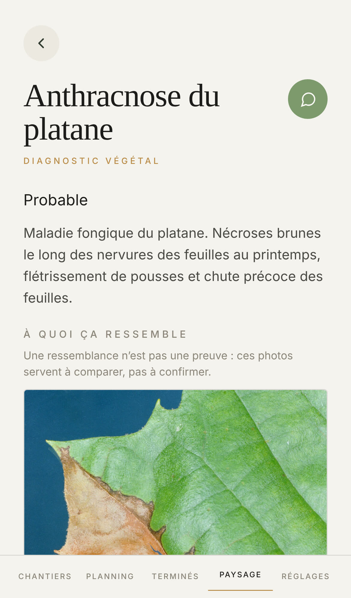
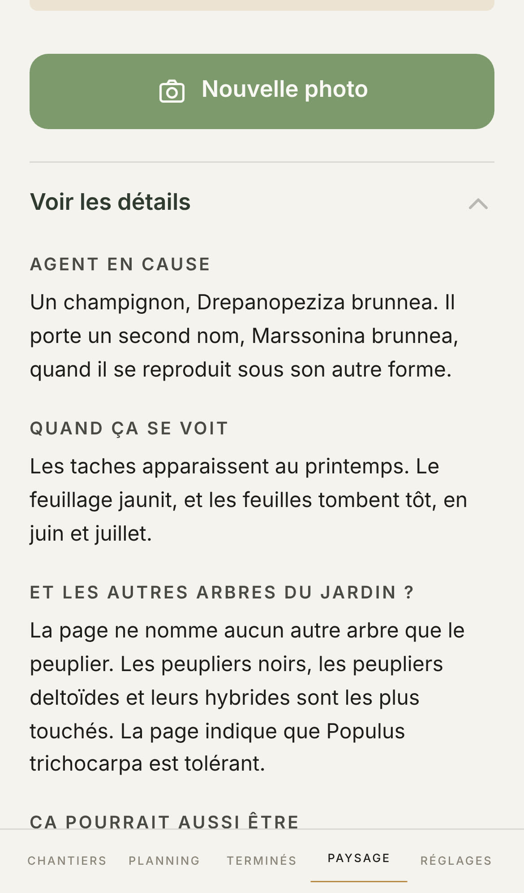
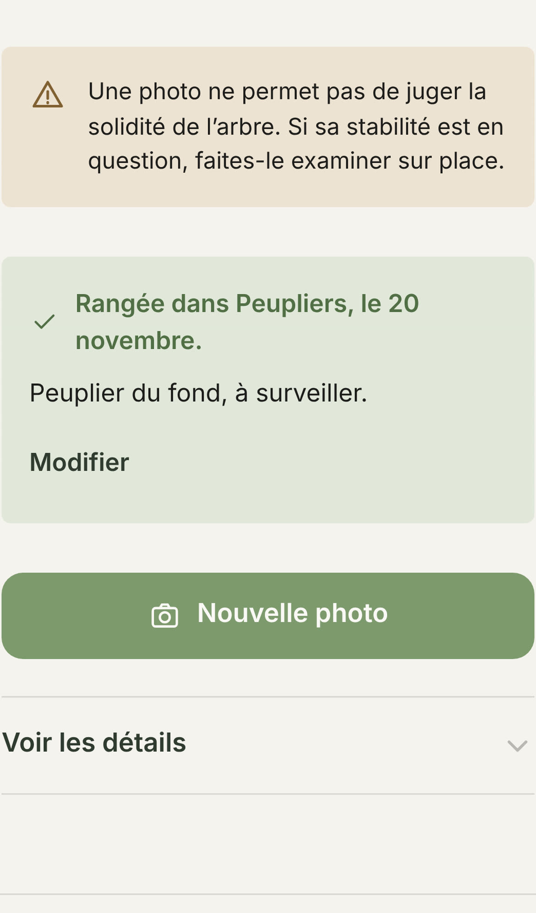
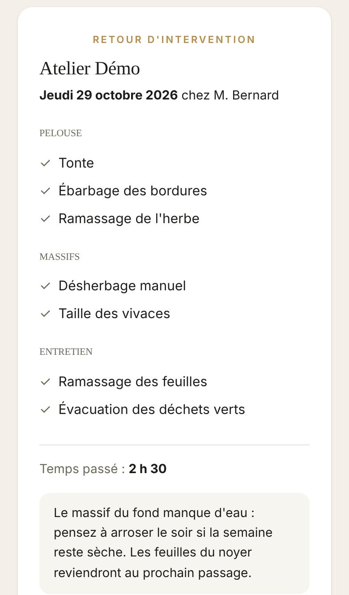
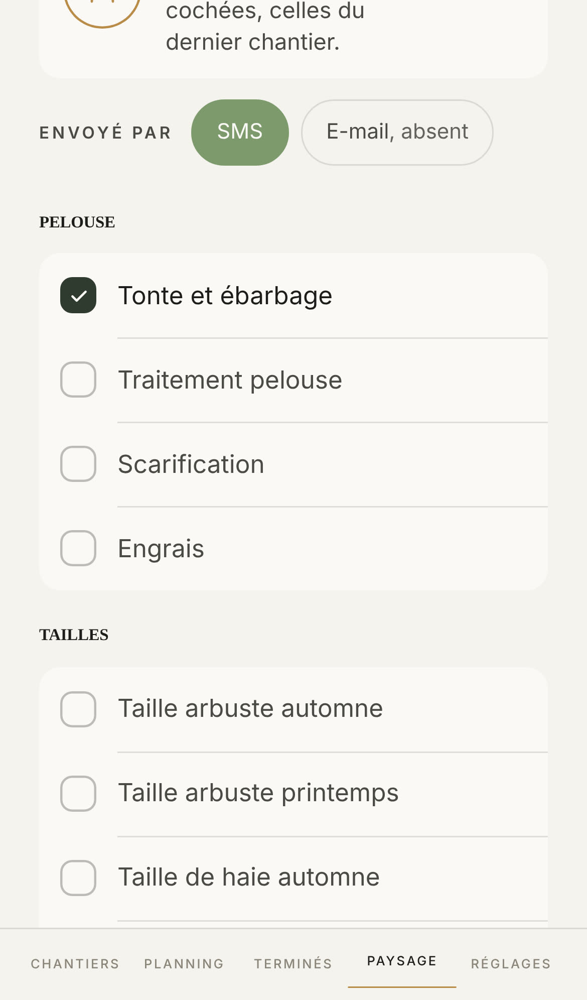
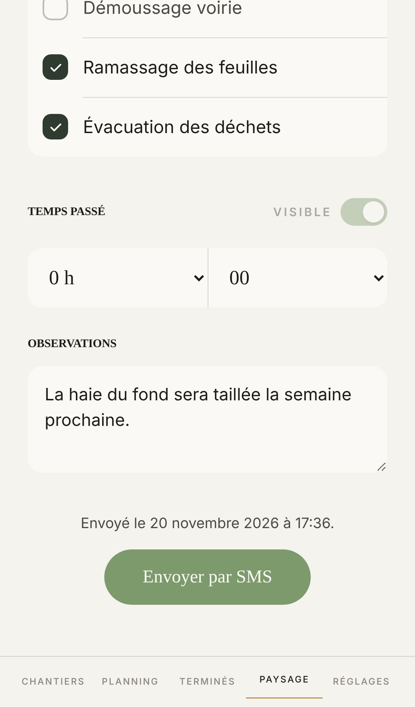

Les outils de paysage
Avec Artisan, Entreprise ou Illimité.
+6 € HT par mois
- Le plan d'arrosage
- Le diagnostic végétal
- Les fiches de chantier
Le plan d'arrosage, le diagnostic végétal et les fiches de chantier, en plus de votre formule.
6 € HT par mois. Un plan d'arrosage et un diagnostic offerts pour essayer.
Photographiez le croquis du jardin, et le plan sort avec sa liste de pièces.
Ce qui reste à mesurer sur place est écrit sous le plan.
Le vrai écran de Cause, sur ce jardin.
En Ø32, la pelouse tient sur un réseau de moins.

Une sonde de pluie, le grillage avertisseur : touchés, ils s’ajoutent à la liste.

La changer, ou la supprimer.
Chargement

Touchez une pièce pour la supprimer. Elle reste sur le plan, grisée et barrée.


Tout est additionné, pièce par pièce. Le message part tel quel, ou retouché.

Photographiez une plante malade, et sachez quoi faire.

Une feuille de peuplier, et la fiche qui répond.
Cause la compare à ses fiches, et répond.

Ce que la maladie fait à l’arbre, puis la conduite à tenir.

Comment la reconnaître, comment elle arrive, et tout le reste de la fiche.

Créez un dossier et rangez-y la maladie, avec votre note.

Cochez ce qui a été fait pendant l'entretien, puis envoyez la fiche au client.


Votre fiche.Ce que reçoit M. Bernard.
Le vrai écran de Cause, chez M. Bernard.
Vos prestations, rangées par famille, une fois pour toutes.

Ses cases de la dernière fois, déjà cochées.

Par SMS, le compte rendu prêt à partir.

Ce qu’il lit sur son téléphone.

En plus de votre formule, quelle qu'elle soit. Vous les retirez quand vous voulez.
Avec Artisan, Entreprise ou Illimité.
+6 € HT par mois
Non. Le devis, le planning, la facture et la TVA sont dans chaque formule. Les outils s'y ajoutent, et se retirent.
Cause vous dit ce qui manque, une cote, le piquage ou la nourrice. Le plan attend que tout soit là.
Non. Il dit ce qui est probable et quoi faire. Une photo ne permet pas de juger la solidité d'un arbre.
Sans carte bancaire. Sans engagement.